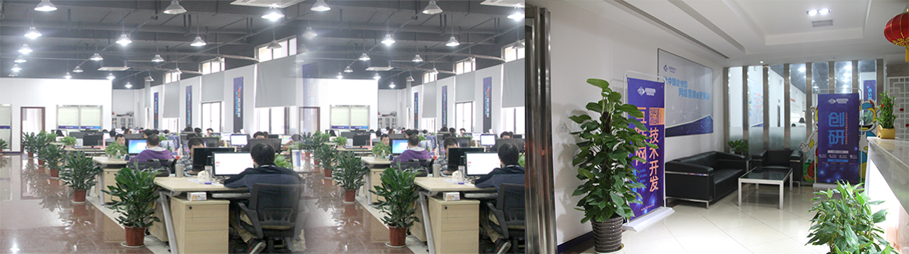

湖南创研科技股份有限公司是中国领先的互联网整合营销服务商，成立于2007年。于2016年1月在 （企业简称：创研股份，证券代码：835755）创研股份通过全面整合互联网营销流程和传播资源，为企业及组织提供快速、精准的互联网营销整体解决方案。主营业务包括技术开发（pc网站、手机网站、微网站、移动app）和网络营销（品牌推广、活动及内容策划、媒介投放、公共关系），以及互联网新媒体广告在线交易服务。
湖南省移动互联网重点企业及湖南省电子商务示范型企业，曾荣获第五届金网奖、全国网络营销金点子奖、荣获最佳电商创新案例奖、行业领军企业奖及网络营销新秀奖、最佳服务明星企业称号等多项荣誉。
拥有多项国家软件著作权和自主知识产权。首创引领业界趋势的T2W技术及C-Shop产品，是CCTV和湖南卫视重点推荐企业。